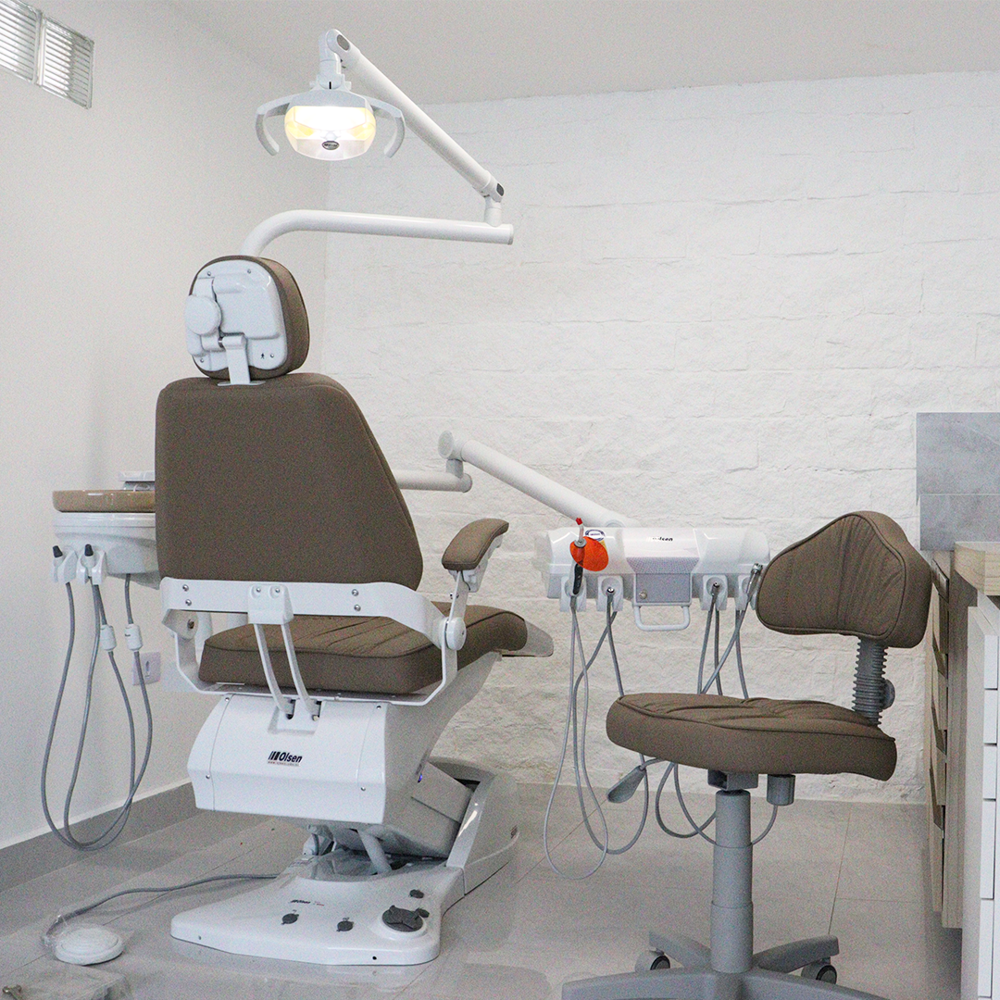

Nossa história
A história da clínica Mara Odontologia começou em 2020, quando a advogada Fernanda Varella e o cirurgião dentista José Gustavo Abu-Jamra, trabalhando juntos em processos judiciais, como advogada e perito, idealizaram uma clínica que pudesse harmonizar
o cuidado ético com a humanização dos tratamentos odontológicos.
Nos anos seguintes, o que era um sonho tornou-se realidade, com a busca por um imóvel perto do Centro de Caraguatatuba, a escolha da marca, a reforma do imóvel, e a compra dos objetos e materiais.

A escolha do nome Mara Odontologia é uma homenagem a mãe do Dr. Gustavo Abu-Jamra e tia da sócia Fernanda Varella, que faleceu em virtude de um câncer, e era muito amada por ambos.
Esperamos que a clínica Mara Odontologia se torne referência em odontologia de excelência na cidade, e possa servir aos moradores da cidade de Caraguatatuba, cuidando da saúde bucal e da autoestima de seus pacientes.